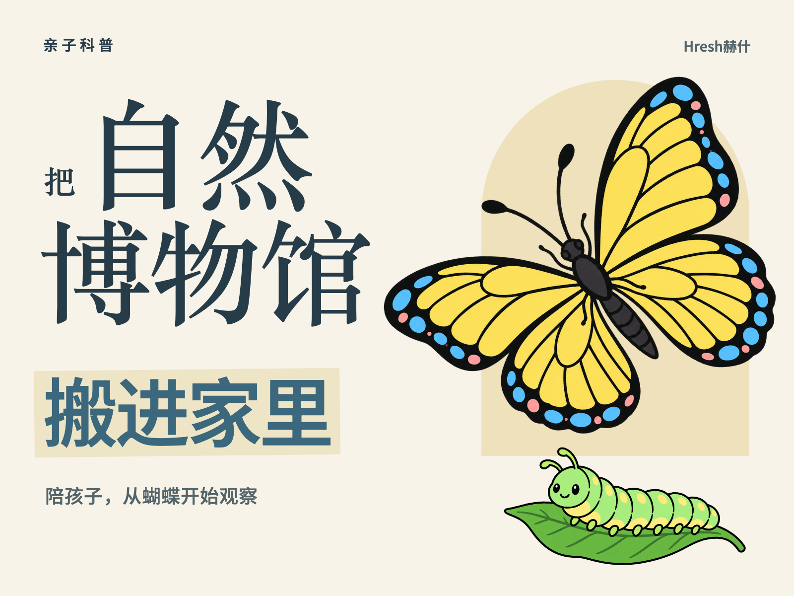

自然博物馆：从视频内容到封面
这里展示用户提供的约68秒亲子科普视频，以及本项目制作的4:3封面。点击视频播放，对照内容如何被提炼成标题与视觉主体。
输入视频
当前浏览器不支持视频播放，可使用下方链接下载视频。
1920×1080 · 约68.17秒 · H.264 / AAC。预览图来自视频约20秒处。
下载输入视频
输出封面

1600×1200 · 宋体精修版。内容主体为主，保留案例账号的轻量署名；本例未制作3:4。
下载封面原图
案例说明